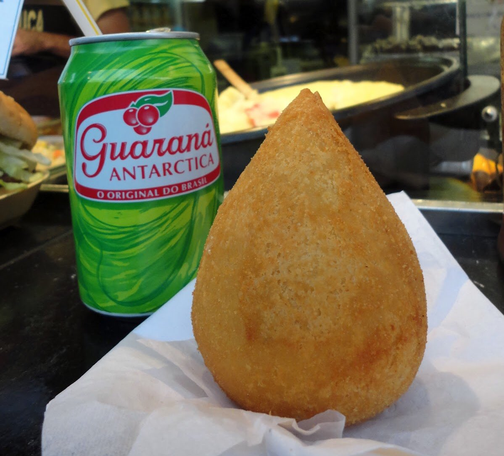

Aromas Lanchonete
Produtos
Preços
Contato
Faça seu pedido
Os melhores salgados da região
Combo: coxinha com requeijão mais um refri
Nossos salgados são feitos com massa de batata e produtos de primeira qualidade.
